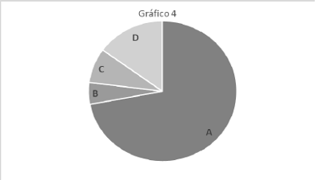
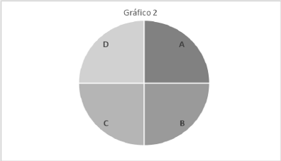
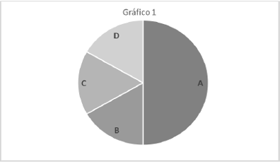
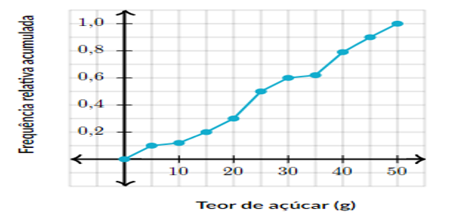

Questionário ✅ ❌
Pergunta 1
Existem diversas maneiras de classificar as pessoas. Cada classificação tem um propósito diferente. Uma das classificações úteis para questões de Marketing, por exemplo, é a classificação em classes sociais. Analisando os diferentes critérios propostos para classificação empregados atualmente no Brasil, podemos generalizar as seguintes categorias:
- Classe A: inclui as famílias com renda mensal igual ou maior que R$ 14.400,00;
- Classe B: inclui as famílias com renda mensal entre R$ 7.100 e R$ 14.399,00;
- Classe C: inclui as famílias com renda mensal entre R$ 2.600 e R$ 7.099,00;
- Classe D: inclui as famílias com renda mensal igual ou menor que R$ 2.599,00.
Suponha que uma determinada população em estudo distribui-se nesses estratos, de acordo com as quantidades a seguir:
- Classe A: 13
- Classe B: 57
- Classe C: 130
- Classe D: 590
Se temos a possibilidade de retirar no total 79 unidades amostrais para analisar o comportamento de consumo dessa população, quantas unidades amostrais devem ser retiradas da classe D? Considere que o processo de amostragem deve ser estratificado.
- a. 100 unidades amostrais
- b. 59 unidades amostrais
- c. 86 unidades amostrais
- d. 44 unidades amostrais
- e. 75 unidades amostrais
Resposta: b. 59 unidades amostrais
- Primeiro, calculamos a proporção de cada estrato em relação ao total de unidades amostrais disponíveis:
- 13 + 57 + 130 + 590 = 790
- Classe A: (13/790)·79 = 1,31
- Classe B: (57/790)·79 = 5,75
- Classe C: (130/790)·79 = 13,02
- Classe D: (590/790)·79 = 58,92
- Portanto, devemos retirar aproximadamente 59 unidades amostrais da classe D.
Pergunta 2
Em uma pesquisa socioeconômica sobre itens de conforto, perguntou-se a cada um dos 800 entrevistados: Quantos aparelhos de TV em cores há em sua casa? Os resultados aparecem na tabela:
| N° de aparelhos |
Frequência absoluta |
Frequência relativa |
Porcentagem |
| 0 |
20 |
.... |
.... |
| 1 |
.... |
.... |
.... |
| 2 |
.... |
0,6 |
.... |
| 3 |
.... |
.... |
7,5 |
| 4 |
30 |
.... |
.... |
Opções
0,075 / 0,0375 / 60 / 0,2625 / 0,025 / 480 / 2,5% / 60% / 210 / 26,25% / 3,75%
Resposta:
| N° de aparelhos |
Frequência absoluta |
Frequência relativa |
Porcentagem |
| 0 |
20 |
0,025 |
2,5% |
| 1 |
210 |
0,2625 |
26,25% |
| 2 |
480 |
0,6 |
60% |
| 3 |
60 |
0,075 |
7,5 |
| 4 |
30 |
0,0375 |
3,75% |
- Frequência relativa para cada categoria:
- Para 0: 20/800=0,025
- Para 1: x/800=0,2625
- Para 2: y/800=0,6
- Para 3: z/800=0,075
- Para 4: 30/800=0,0375
- Porcentagem para cada categoria:
- Para 0: 0,025 x 100% = 2,5%
- Para 1: 0,2625 x 100% = 26,25%
- Para 2: 0,6 x 100% = 60%
- Para 3: 0,075 x 100% = 7,5%
- Para 4: 0,0375 x 100% = 3,75%
Pergunta 3
Para cada uma das amostras abaixo, informar o tipo do processo de amostragem:
- P - Amostragem probabilística
- NP - Amostragem não probabilística
Para uma pesquisa sobre os hábitos dos estudantes, construí uma amostra com o seguinte procedimento:
- Todos os meus colegas da faculdade (tenho telefone e e-mail de todos eles). (.....)
- Fiquei na única porta de entrada da escola abordando todos os meus conhecidos. (.....)
- Consegui uma lista de todos os alunos das escolas em ordem alfabética. Gerei 20 números aleatórios. Selecionei da lista de alunos aqueles que ocupavam posições equivalentes aos números aleatórios gerados. (.....)
- Fiquei na única porta de entrada da escola e a cada 12 pessoas que entravam, eu abordava uma. (.....)
- Consegui uma lista de todos os alunos das escolas com uma ordenação aleatória, e selecionei os 20 primeiros da lista. (.....)
Resposta:
- Todos os meus colegas da faculdade (tenho telefone e e-mail de todos eles). NP ✅
- Fiquei na única porta de entrada da escola abordando todos os meus conhecidos. NP ✅
- Consegui uma lista de todos os alunos das escolas em ordem alfabética. Gerei 20 números aleatórios. Selecionei da lista de alunos aqueles que ocupavam posições equivalentes aos números aleatórios gerados. P ✅
- Fiquei na única porta de entrada da escola e a cada 12 pessoas que entravam, eu abordava uma. NP ❌ ERRADA!
- Consegui uma lista de todos os alunos das escolas com uma ordenação aleatória, e selecionei os 20 primeiros da lista. P ✅
Pergunta 4
Tendo em vista que, diariamente, a Polícia Federal apreende uma quantidade X, em kg, de drogas de determinado aeroporto do Brasil, e considerando os dados hipotéticos da tabela K a seguir, que apresenta os valores observados da variável X em uma amostra aleatória de 5 dias de apreensões no citado aeroporto, julgue o item.
Tabela K: Informações sobre a quantidade diária de drogas apreendidas, em kg.
| Variável |
Dia |
Dia |
Dia |
Dia |
Dia |
| X quantidade diária de drogas apreendidas em kg |
1 |
2 |
3 |
4 |
5 |
| X quantidade diária de drogas apreendidas em kg |
10 |
22 |
18 |
22 |
28 |
A tabela em questão descreve a distribuição de frequências da quantidade de drogas apreendidas nos cinco dias que constituem a amostra.
Escolha uma opção: Verdadeiro ou Falso
Resposta: Verdadeiro ❌ ERRADA!
Pergunta 5
Para comparar a precisão de medida de dois micrômetros, um técnico estuda as medidas apresentadas nas medições com ambos os aparelhos. Com um manômetro, mediu repetidamente o diâmetro de uma pequena esfera de rolamento; as mensurações acusaram média de 5,32mm e desvio-padrão de 0,019mm. Com o outro manômetro, mediu o comprimento natural de uma mola, tendo as mensurações acusando média de 6,4cm e desvio-padrão de 0,03cm. Supondo que o verdadeiro valor do diâmetro da esfera seja de 5,32mm e do comprimento da mola seja de 6,4cm, é correto afirmar que o manômetro mais preciso é aquele que mediu a mola.
Escolha uma opção: Verdadeiro ou Falso
Resposta: Falso
- O desvio padrão relativo para o manômetro que mediu o diâmetro da esfera é aproximadamente
- 0,019/5,32 ≃ 0,00357 ou seja, cerca de 0,357%.
- O desvio padrão relativo para o manômetro que mediu o comprimento da mola é aproximadamente
- 0,03/6,4 = 0,0046875, ou seja, cerca de 0,46875%.
- O manômetro que mediu o diâmetro da esfera possui uma precisão relativa maior em comparação com o manômetro que mediu o comprimento da mola.
Pergunta 6
Um ônibus de excursão partiu com 40 turistas a bordo, dos quais 8 reservaram a viagem com antecedência e pagaram, cada um, R$ 300,00. Os demais pagaram, cada um, R$ 340,00 pela viagem. Qual foi o preço médio, em reais, que cada turista pagou na excursão?
- a. 330
- b. 331
- c. 335
- d. 334
- e. 332
Resposta: e. 332
- O número de turistas que pagou R$ 300,00 é 8, e o número total de turistas é 40. Portanto, o número de turistas que pagou R$ 340,00 é:
- 40 - 8 = 32
- total pago pelos turistas que pagaram R$ 300,00 e pelos turistas que pagaram R$ 340,00:
- (8x300)+(32x340) = 2400+10880 = 13280
- O total pago pelos 40 turistas é:
- R$ 13.280,00.
- O preço médio por turista, dividimos esse total pelo número total de turistas:
- 13280/40 = 332
- O preço médio que cada turista pagou na excursão foi de R$ 332,00.
Pergunta 7
Aponte, em cada alternativa, o gráfico que melhor descreve cada uma das afirmações a seguir.

-
Mais da metade dos elementos pertence à categoria A.
-
Metade dos elementos está na categoria A. Em relação à outra metade, as categorias C e D têm metade dos elementos da categoria B.

-
Os elementos estão divididos uniformemente entre as 4 categorias.

-
Metade dos elementos está na categoria A e a outra metade está igualmente distribuída entre as categorias B, C, D.
Resposta: Nas imagens
Pergunta 8
Nutricionistas mediram o teor de açúcar (em gramas) de 32 bebidas de uma confeitaria famosa. Um gráfico de frequência relativa acumulada desses dados pode ser visto a seguir.

Qual a quantidade de bebidas que tem o teor de açúcar entre 20g e 40g?
Resposta: a.8 ❌ ERRADA!
Pergunta 9
No final de 2022 o patrão de um escritório de contabilidade oferece uma bonificação de R$ 250,00 aos seus oito funcionários, paga juntamente com o salário de dezembro. Se em novembro de 2022 o salário médio desses funcionários era de R$ 920,00, qual o salário médio em dezembro de 2022?
- a. 1170
- b. 1270
- c. 1150
- d. 1117
- e. 1840
Resposta: a. 1170
Pergunta 10
Após corrigidas as provas de Matemática e Língua Portuguesa de um concurso, obteve-se as medidas de resumo da turma:
- MATEMÁTICA (quantidade média de questões acertadas da turma: 8,0; desvio padrão: 4,0)
- LÍNGUA PORTUGUESA (quantidade média de questões acertadas da turma: 17,0; desvio padrão: 4,0)
Um candidato que tenha acertado 17 questões em ambas as provas, se saiu melhor em Matemática.
Escolha uma opção: Verdadeiro ou Falso
Resposta: Verdadeiro
- Um desvio padrão acima da média seria 8 + 4 = 12 questões acertadas.
- Um desvio padrão acima da média seria 17 + 4 = 21 questões acertadas.
- Como o candidato acertou 17 questões em ambas as provas, ele está na média da turma em Língua Portuguesa (17 questões acertadas), mas está acima da média da turma em Matemática (8 questões acertadas).